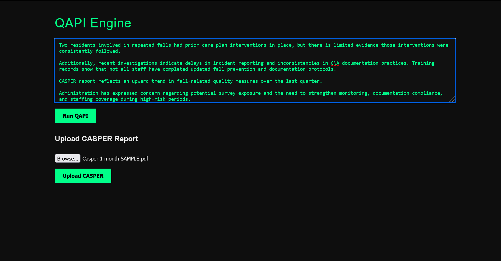
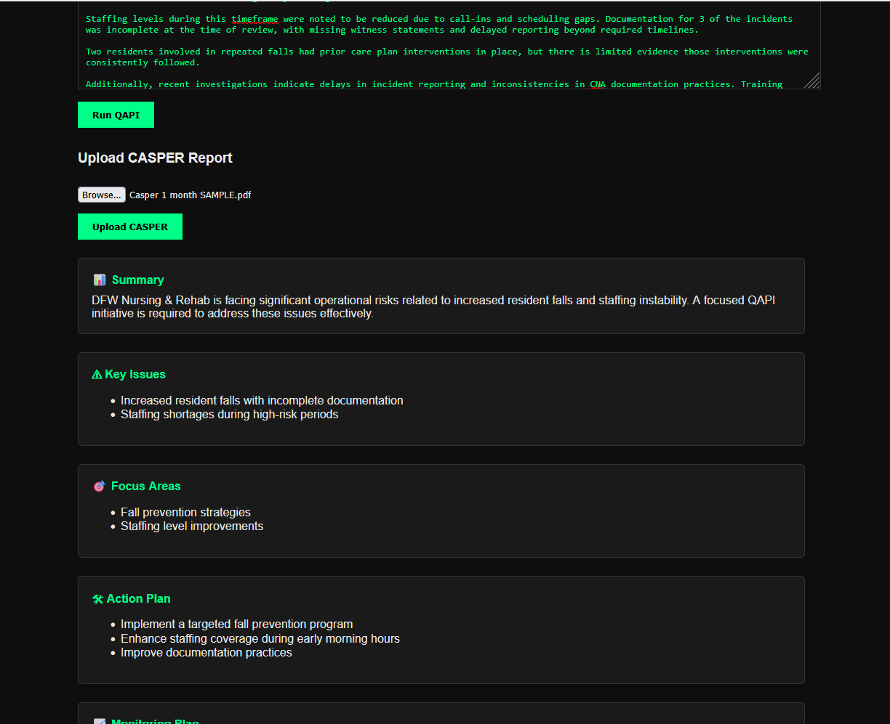

Operational Input
Maven ingests QAPI summaries, CASPER reports, and investigation data to detect systemic patterns across your facility.

Turn QAPI data, investigations, and facility history into real-time operational insight.
Maven ingests QAPI summaries, CASPER reports, and investigation data to detect systemic patterns across your facility.

Immediate visibility into risk, priorities, and action plans across operations.
